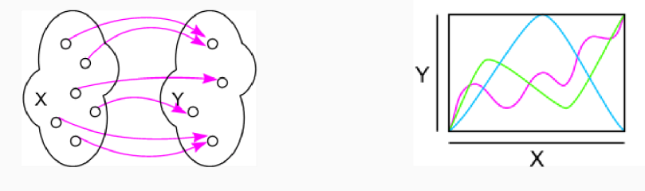

Mathe Klausur
Funktionen
f(x)
X ist der Definitionsbereich
Y ist der Wertebereich
Funktionsgraph: Graph einer reellen Funktion f: X -> ℝ ist die Menge aller Punkte
Rechenregeln
(f+-g)(x) = f(x) +- g(x)
(f*g)(x) = f(x) * g(x)
wenn g(x) ≠ 0 dann (f/g)(x) = f(x)/g(x)
Begriffe
Monotonie:
monoton wachsend: Gilt wenn f(x₁) ≤ f(x₂) für x₁ ≤ x₂
monoton fallend: Gilt wenn f(x₁) ≥ f(x₂) für x₁ ≥ x₂
streng monoton: Wenn es immer größer bzw. kleiner ist und nie gleich
Komposition
Funktionen können verkettet werden.
h = g∘f: A->C, x->h(x) = (g∘f)(x) = g(f(x))
die Komposition von f und g
Beispiel: f(x) = x+1 und g(x) = x^2
-> (f∘g)(x) = f(g(x)) = f(x^2) = x^2+1
-> (g∘f)(x) = g(f(x)) = g(x+1) = (x+1)^2 = x^2+2x+1
Injektivität
Nicht ein Y Wert darf doppelt belegt sein.
Surjektivität

Jeder Y Wert muss mindestens einmal belegt sein.
Bijektivität
Die Funktion muss Injektivität und Surjektiv sein.
siehe auch Vorlesung 6